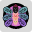

YOUR FOCUS, YOUR RULES
Vigil
Checking your account…
Create account or manage Plus PrivacyREADY WHEN YOU ARE
25:00
Choose a few sites, then start a session.
Sites to pause
0No sites added yet. Start with one that often pulls you away.

YOUR FOCUS, YOUR RULES
Checking your account…
Create account or manage Plus PrivacyREADY WHEN YOU ARE
25:00
Choose a few sites, then start a session.
No sites added yet. Start with one that often pulls you away.